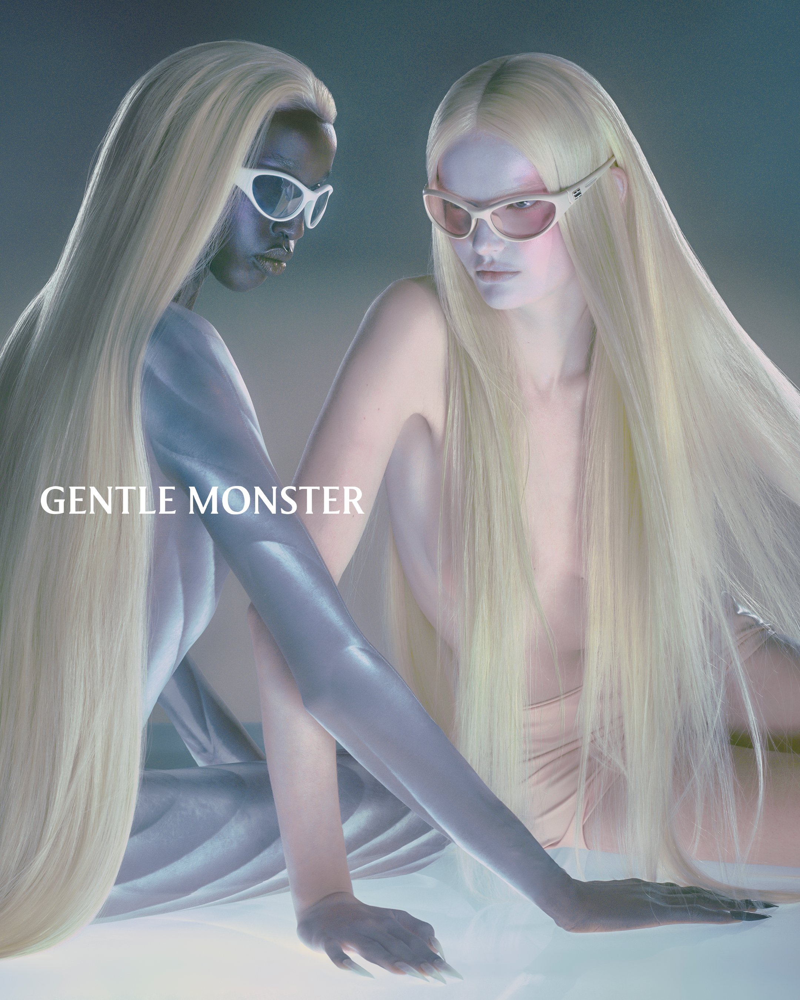
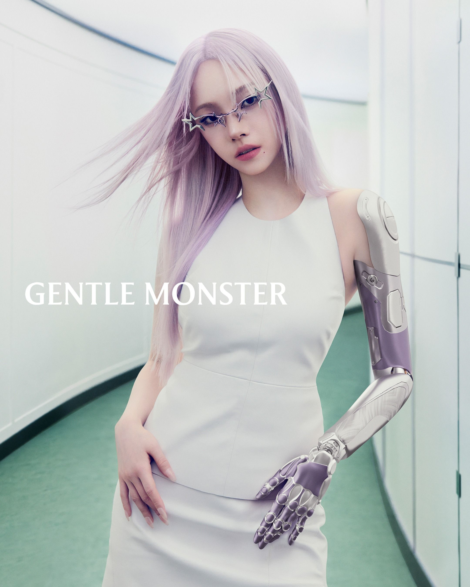
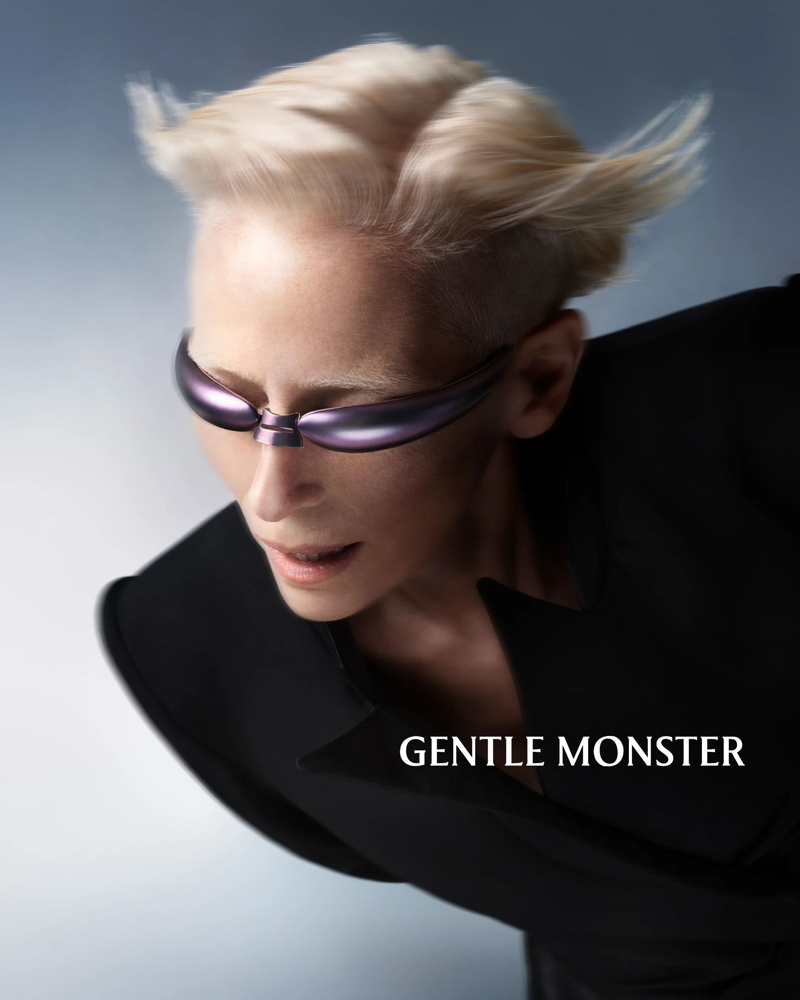
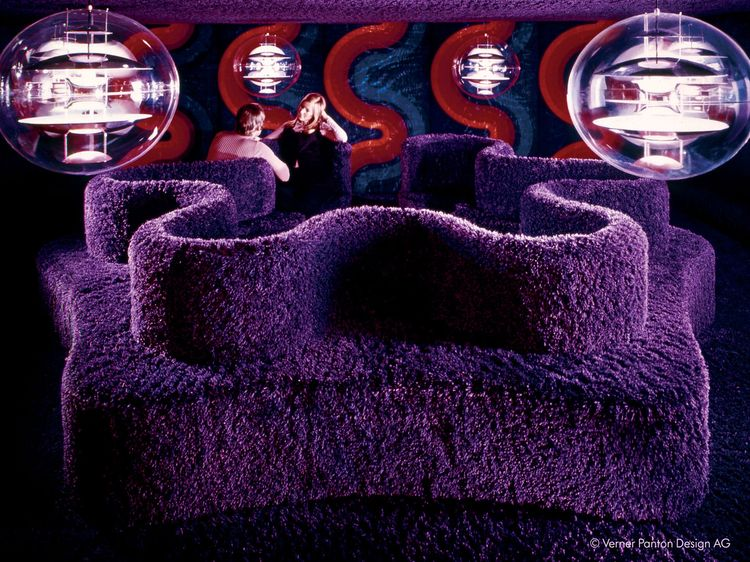
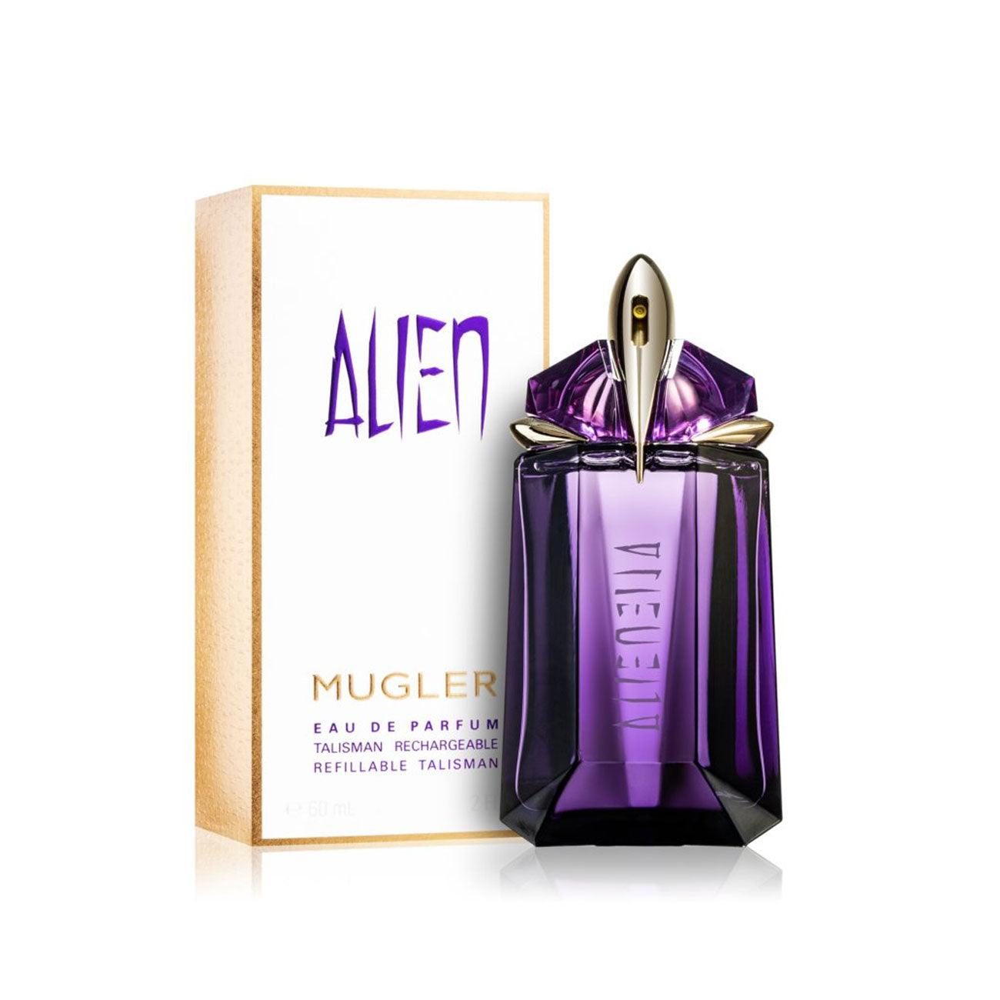
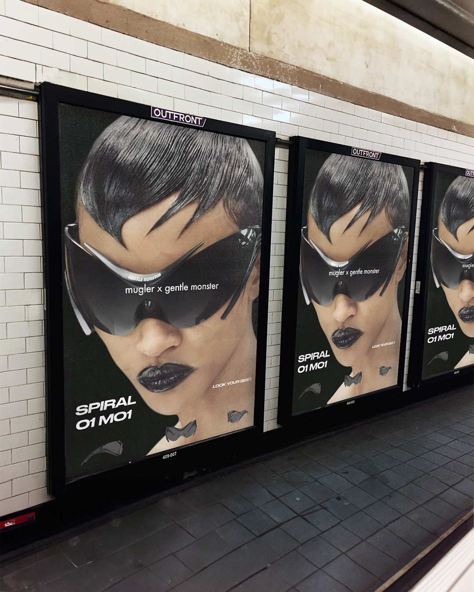
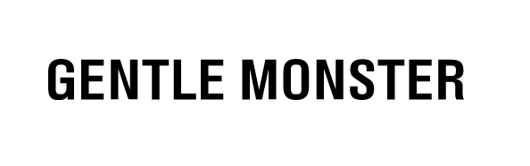
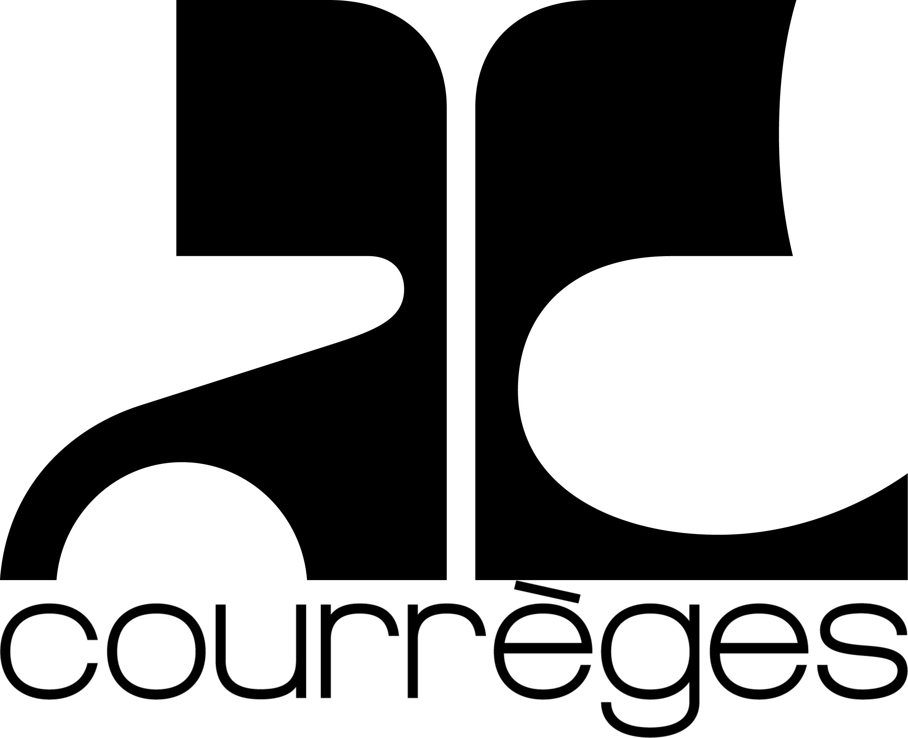
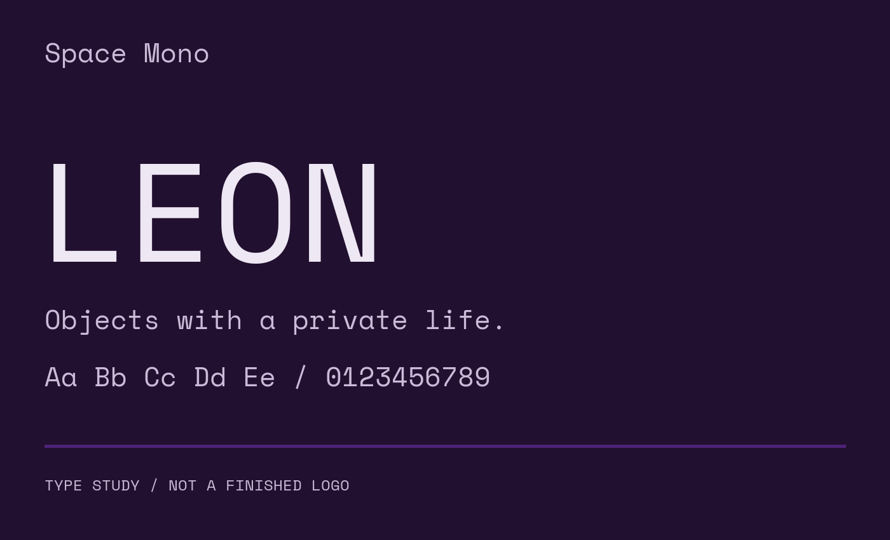

← All three worldsLEON / MOODBOARD 3 / 8 VISUAL REFERENCES
Moodboard 3
Retro-Futurism & Artificial Reality
Perfectly staged. Slightly wrong.
A synthetic world of performed identities, showroom perfection and objects that feel like props from a future remembered incorrectly. Purple is glossy, artificial and deliberately controlled.
BLACK
#09070C
AUBERGINE
#21102F
DEEP PURPLE
#351344
AMETHYST
#4D2378

EditorialGentle Monster — 2024 campaign
Photography by Elizaveta Porodina. Study the manufactured persona, sculptural styling and cool metallic surfaces.
Source & credits ↗
Character / stagingGentle Monster — Pocket collection
Karina in the Pocket campaign. Use the artificial character and surreal prop relationship as a staging reference. The pale image is an accent, not a change to LEON’s dark palette.
Source & credits ↗
Surface / attitudeGentle Monster — BOLD, Tilda Swinton
2025 BOLD campaign. Metallic purple and a controlled, unreadable expression suggest a compelling direction for a deliberately artificial LEON portrait.
Source & credits ↗Verner Panton — Fantasy Landscape

An immersive synthetic environment built around continuous sculptural surfaces. Borrow the purple enclosure and staged unreality for a LEON display or campaign set; keep the warmer colors as reference context.
Source & credits ↗BRANDING / PACKAGING / ADVERTISINGHow the world becomes a brand.

Packaging / product identityMugler — Alien talisman
Purple glass turns a functional container into a recognizable artifact. Study the sculptural object against its straightforward carton; avoid literal gemstone-shaped branding.
Source & credits ↗
Advertising / concept referenceMugler × Gentle Monster — poster mockup
A Behance advertising concept reference, rather than a verified media placement. Repeated portraits, disciplined labels and a blunt slogan create a synthetic, controlled rhythm suitable for LEON.
Source & credits ↗Symbols, wordmarks & recognition.

LogoGentle Monster — wordmark
Study the force of a plain, repeated wordmark within a highly unusual world. Image contributor Rachel silver kim, CC BY-SA 4.0; unmodified. LEON should develop its own letter proportions.
Source & credits ↗
LOGO REFERENCECourrèges — symbol and wordmark
Rounded, repeated shapes offer a precise retro-futurist vocabulary. For LEON, study the balance of an independent symbol and simple lettering, and how both could become a hardware detail.
Source & credits ↗Montserrat + a voice for this world.
MONTSERRAT / LEON
LEON
Objects with a private life.
Aa Bb Cc Dd Ee / 0123456789
Regular 400Medium 500Semibold 600Bold 700
Montserrat unifies the presentation. Photography, symbols, materials and composition give each world its distinct character. This is a type study, not a finished logo. Font source ↗
COMPLEMENTARY FONT / SPACE MONOSpace Mono

A monospaced companion for specimen numbers, deadpan captions and artificial-world details. Use it as an accent alongside Montserrat, letting the contrast feel deliberately systematic. Explore Space Mono ↗
TRANSLATION INTO LEONTreat the jewel as a desirable artifact in a staged reality: frontal portraits, deadpan poses, lacquered surfaces and one absurd intervention. Pair a strong wordmark with monospaced labels and precise product numbering.
Avoid generic cyberpunk grids, rainbow neon, gaming typography and nostalgia pasted on without a concept.